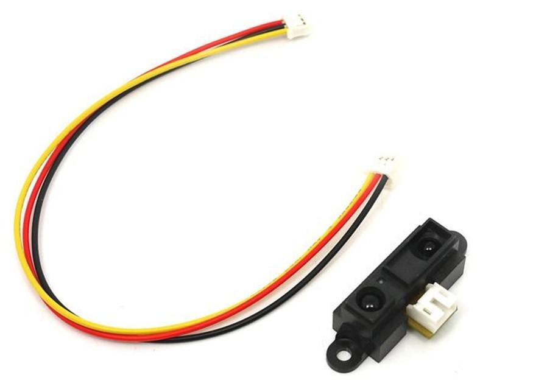
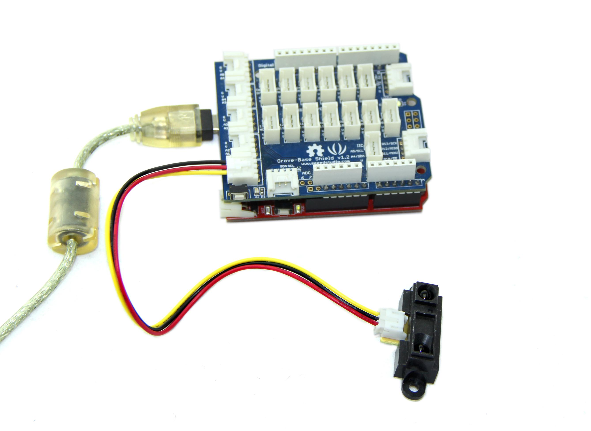
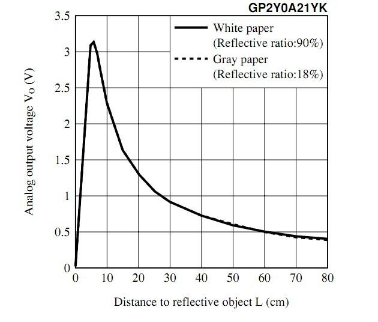
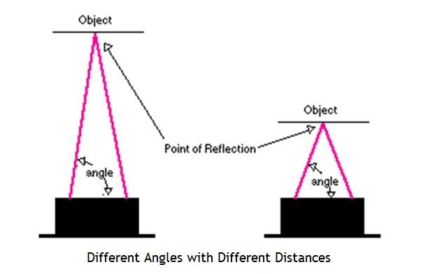

The 80cm Infrared Proximity Sensor is a General Purpose Type Distance Measuring Sensor. This sensor SharpGP2Y0A21YK, boasts a small package and very low current consumption, takes a continuous distance reading and returns a corresponding analog voltage with a range of 10cm (4") to 80cm (30"). Can be used in TVs, personal computers, cars and so on.
Model: SEN39046P

| Item | Minimum | Typical | Maximum |
|---|---|---|---|
| 工作电压 | 2.5V | 5V | 7V |
| 模拟输出电压(80cm) | 0.25V | 0.4V | 0.5V |
| 消耗电流平均值 | - | 33mA | 50mA |
| 通信协议 | 模拟值采集读数 | ||
The Infrared Proximity sensor is easy to use. The relationship between the voltage reading and the distance as shown below. When we read the voltage, which indicate the distance from the object in front to this sensor.
Note: This sensor is quite small and use a tiny connector called the Japan Solderless Terminal (JST) connector. These connectors have three wires: ground, vcc, and the output signal. Because this sensor fire continuously and don't need any clock to initiate a reading cycle, it is easy to interface with any microcontroller. For the Arduino&Seeeduino, we prepared a 4-pin to 3-pin wire to convert the 3-pin connecter on the sensor to 4-pin connecter on the Grove Base Shield, to compatible with the Seeeduino Grove interface.

#define IR_PROXIMITY_SENSOR A1 // Analog input pin that is attached to the sensor
#define ADC_REF 5//reference voltage of ADC is 5v.If the Vcc switch on the Seeeduino
//board switches to 3V3, the ADC_REF should be 3.3
float voltage;//the sensor voltage, you can calculate or find the distance
// to the reflective object according to the figures
//on page 4 or page 5 of the datasheet of the GP2Y0A21YK.
void setup()
{
// initialise serial communications at 9600 bps:
Serial.begin(9600);
}
void loop()
{
voltage = getVoltage();
Serial.print("sensor voltage = " );
Serial.print(voltage);
// wait 500 milliseconds before the next loop
delay(500);
}
/****************************************************************************/
/*Function: Get voltage from the sensor pin that is connected with analog pin*/
/*Parameter:-void */
/*Return: -float,the voltage of the analog pin */
float getVoltage()
{
int sensor_value;
int sum;
// read the analog in value:
for (int i = 0;i < 20;i ++)//Continuous sampling 20 times
{
sensor_value = analogRead(IR_PROXIMITY_SENSOR);
sum += sensor_value;
}
sensor_value = sum / 20;
float voltage;
voltage = (float)sensor_value*ADC_REF/1024;
return voltage;
}

Note: Because of some basic trigonometry within the triangle from the emitter to reflection spot to receiver, the output of the detector is non-linear with respect to the distance being measured.
1.You should have got a raspberry pi and a grovepi or grovepi+.
2.You should have completed configuring the development enviroment, otherwise follow here.
3.Connection
4.Navigate to the demos' directory:
cd yourpath/GrovePi/Software/Python/
nano grove_infrared_distance_interrupt.py # "Ctrl+x" to exit #
import time
import grovepi
# Connect the Grove Infrared Distance Interrupt Sensor to digital port D4
# SIG,NC,VCC,GND
sensor = 4
grovepi.pinMode(sensor,"INPUT")
while True:
try:
# Sensor returns LOW and onboard LED lights up when the
# received infrared light intensity exceeds the calibrated level
if grovepi.digitalRead(sensor) == 0:
print "found something"
else:
print "nothing"
time.sleep(.5)
except IOError:
print "Error"
5.Run the demo.
sudo python grove_infrared_distance_interrupt.py
This new rangers use triangulation and a small linear CCD array to compute the distance and/or presence of objects in the field of view. The basic idea is this: a pulse of IR light is emitted by the emitter. This light travels out in the field of view and either hits an object or just keeps on going. In the case of no object, the light is never reflected and the reading shows no object. If the light reflects off an object, it returns to the detector and creates a triangle between the point of reflection, the emitter, and the detector.

The angles in this triangle vary based on the distance to the object. The receiver portion of these new detectors is actually a precision lens that transmits the reflected light onto various portions of the enclosed linear CCD array based on the angle of the triangle described above. The CCD array can then determine what angle the reflected light came back at and therefore, it can calculate the distance to the object.
This new method of ranging is almost immune to interference from ambient light and offers amazing indifference to the color of object being detected. Detecting a black wall in full sunlight is now possible.
| Revision | Descriptions | Release |
|---|---|---|
| v0.9 | Initial public release | 3/03/2011 |
If you have questions or other better design ideas, you can go to our forum or wish to discuss.
Copyright (c) 2008-2016 Seeed Development Limited (www.seeedstudio.com / www.seeed.cc)